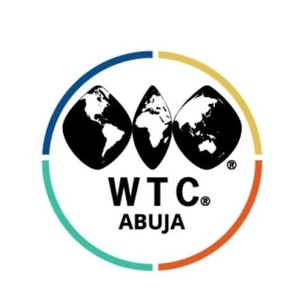

WTC Abuja unveils sports tournament to strengthen business ties

The World Trade Centre Abuja has launched the Chairman’s Cup, a sports tournament for tenants and occupants intended to support workplace wellness and build connections among businesses. The first competitions are in lawn tennis and table tennis, with management planning to add five-a-side football and padel.
Vice-President Ahmed Adelaja Karim said the initiative would give professionals a way to interact beyond their routine commercial activities. He said the cup was also organised in honour of the chairman of Churchgate Group, citing the group’s work in commercial and residential property and warehousing. Karim described the tournament as the first of its kind at the centre and said some tenants sought opportunities to socialise and improve their welfare as well as office space.
Karim said the events could serve as an informal networking platform, with relationships formed through sport potentially leading to business partnerships. He also emphasised the importance of physical and mental health to workplace productivity. Plans include developing two padel courts, which he said would let occupants exercise during breaks or after work without leaving the premises.
Roberto Pozzi, representing Nigeria Agip Exploration Managing Director Maurizio Pinna, said recreational activities could promote teamwork and collaboration among professionals. Pozzi, whose company operates from the centre, said sport could offer workers a break from demanding responsibilities, help them manage stress and restore mental alertness. The tournament forms part of the centre’s “Live, Play, Work” philosophy, which aims to bring commercial activity together with recreation, wellness and social interaction.
Source: Punch